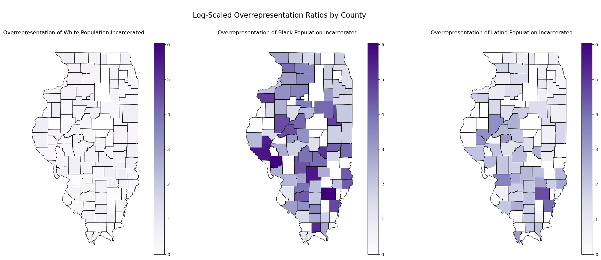

The goal of this EDA is to gain a deeper understanding of the dataset, identify key patterns, and uncover insights that will guide the next stages of the project. This analysis focuses on exploring the geographic and demographic distributions within the data, examining relationships between key variables, and preparing the dataset for modeling. By summarizing and visualizing the data, this section ensures that both the exonerated and non-exonerated groups are well-understood and balanced for supervised learning tasks.
Geographic Analysis
Libraries and Tools
To conduct the geospatial analysis, the following libraries were essential:
Fiona: For reading and writing GIS vector files.
Shapely.geometry: To create and manipulate geometric objects, such as points for latitude/longitude coordinates.
GeoPandas: An extension of pandas that integrates geographic data, allowing spatial operations like mapping and merging shapefiles.
Matplotlib: For creating static plots and visualizations.
These tools provided the functionality to load, preprocess, and visualize geographic data effectively.
Urban vs. Rural Classification
Although the dataset does not explicitly label counties as urban or rural, external classification data from the Illinois Primary Health Care Association (IPHCA) was incorporated to provide important context for analyzing patterns in arrests, exonerations, and over-policing across Illinois counties. For further details, refer to Appendix A.1
Code
# Import necessary Librariesimport pandas as pdimport seaborn as snsimport numpy as np import geopandas as gpd # Extension of pandas used for working with geospatial dataimport fiona # Used for reading and writing GIS vector filesimport matplotlib.pyplot as plt # Used for creating static plots and visualizationsfrom shapely.geometry import Point # Used for creating and analyzing geometric objects.# Load cleaned exoneration datasetexon_df = pd.read_csv('../../data/processed-data/illinois_exoneration_data.csv')#exon_df.head()
Geospatial Workflow
The following analyses involved a sequence of steps to prepare and visualize the exoneration and arrest data:
Geometry Creation
Using shapely.geometry, latitude and longitude values were converted into geometric points to map exoneration cases spatially. This allowed for the dataset to be transformed into a GeoDataFrame using GeoPandas.
Code
# Create geometry column for points based on latitude and longitudegeometry = [Point(xy) for xy inzip(exon_df['longitude'], exon_df['latitude'])]geo_df = gpd.GeoDataFrame(exon_df, geometry=geometry)
Loading Shapefiles
The Illinois county boundary shapefile was loaded using GeoPandas (gpd.read_file). This file provided the geographic outlines needed to visualize data at the county level.
Code
# Load Illinois county shapefile illinois_counties = gpd.read_file('../../data/geospatial/IL_BNDY_COUNTY_Py.shp')
Aggregating Exoneration Data
Exoneration counts were grouped by county and race to produce a summarized table of exonerations (groupby in pandas). This data was then merged with the Illinois shapefile to align geographic boundaries with exoneration counts.
Code
# Aggregate exoneration counts by county and raceexoneration_counts = exon_df.groupby(['county', 'race'], as_index=False).size()exoneration_counts.rename(columns={'size': 'num_exonerations'}, inplace=True)illinois_counties['county'] = illinois_counties['COUNTY_NAM'].str.title() # Match casing# Merge exoneration data with shapefilemerged_counties = illinois_counties.merge(exoneration_counts, on='county', how='left')
Aggregating Arrest Data
Arrest counts were grouped by county and race to produce a summarized table of arrests (groupby in pandas). This data was then merged with the Illinois shapefile to align geographic boundaries with arrest totals.
Code
# Load aggregated arrests dataaggregated_data = pd.read_csv('../../data/processed-data/aggregated_arrests_2001_to_2021.csv')aggregated_data_melted = aggregated_data.melt(id_vars='race', var_name='county', value_name='total_arrests')# Aggregate total arrests by county for all racestotal_arrests_by_county = aggregated_data_melted.groupby('county')['total_arrests'].sum().reset_index()# Ensure county names are consistenttotal_arrests_by_county['county'] = total_arrests_by_county['county'].str.strip().str.title()# Merge total arrests data with the shapefilemerged_total_arrests = illinois_counties.merge(total_arrests_by_county, on='county', how='left')
Handling Missing Data
Counties without recorded exonerations or arrests were assigned a count of 0 to ensure completeness in the visualizations.
Code
# Replace NaN values with 0 for counties without exonerationsmerged_counties['num_exonerations'] = merged_counties['num_exonerations'].fillna(0)# Fill NaN values with 0 for counties without datamerged_total_arrests['total_arrests'] = merged_total_arrests['total_arrests'].fillna(0)
Logarithmic Transformation
The geospatial analysis visualizes exoneration and arrest patterns across Illinois counties. Cook County’s numbers are orders of magnitude higher than those in other counties, which skews the results and makes it difficult to identify trends in smaller counties on a linear scale. To address this, two scaling approaches were used:
Logarithmic Scaling (Including Cook County): Log transformations (np.log1p) compress the data range, making patterns in smaller counties clearer while still preserving Cook County’s contribution.
Linear Scaling (Excluding Cook County): Removing Cook County allows linear scaling to highlight smaller variations across the remaining counties, ensuring their natural distribution is preserved.
With log scaling, patterns across smaller counties become visible without Cook County completely dominating the visualization. Even on a linear scale, exonerations and arrests remain heavily concentrated in urban areas like Cook County and its surrounding regions.
This dual approach highlights the systemic concentration of wrongful convictions and arrests in high-population areas while ensuring patterns in smaller counties are not obscured. By combining log scaling and linear scaling, the visualizations strike a balance between emphasizing Cook County’s impact and uncovering broader geographic trends.
Code
# Exonerations Log transformation to handle the exponential scale of Cook County datamerged_counties['log_num_exonerations'] = np.log1p(merged_counties['num_exonerations'])# Arrests Log transformation to handle the exponential scale of Cook County datamerged_total_arrests['log_total_arrests'] = np.log10(merged_total_arrests['total_arrests'] +1) # Add 1 to avoid log(0)# Filter out Cook County filtered_counties = merged_counties[merged_counties['county'] !='Cook']filtered_total_arrests = merged_total_arrests[merged_total_arrests['county'] !='Cook']
Exonerations by County
Log-Scaled Number of Exonerations by County in Illinois
Code
# Creates side-by-side plotsfig, axes = plt.subplots(1, 2, figsize=(20, 10), constrained_layout=True)merged_counties.plot( column='log_num_exonerations', # Use the log-transformed column cmap='Blues', linewidth=0.5, edgecolor='black', ax=axes[0], legend=True)axes[0].set_title("Log-Scaled Number of Exonerations by County in Illinois (Including Cook)", fontsize=14)axes[0].set_xlabel("Longitude")axes[0].set_ylabel("Latitude")axes[0].grid(color='gray', linestyle='--', linewidth=0.5, alpha=0.5)# Plot the gradient map excluding Cook County, keeping linear scalefiltered_counties.plot( column='num_exonerations', cmap='Blues', linewidth=0.5, edgecolor='black', ax=axes[1], legend=True)axes[1].set_title("Number of Exonerations by County (Excluding Cook)", fontsize=14)axes[1].set_xlabel("Longitude")axes[1].set_ylabel("Latitude")axes[1].grid(color='gray', linestyle='--', linewidth=0.5, alpha=0.5)plt.show()
The maps reveal critical patterns in both exonerations and arrests across Illinois counties. Cook County (Chicago), as expected, dominates the data with orders of magnitude higher counts, which skews the results and makes it challenging to identify trends in smaller counties. To address this, a logarithmic transformation (np.log1p) was applied to compress the data range, ensuring that smaller counties remain visible without flattening Cook County’s impact.
When Cook County is excluded, linear scaling highlights natural variations across the remaining counties. While smaller differences become more interpretable, the visualizations still emphasize the concentration of arrests and exonerations in urban regions outside Cook County. This dual scaling approach—logarithmic for overall visibility and linear for regional comparisons—strikes a balance, allowing geographic disparities across Illinois to emerge clearly.
By visualizing both exonerations and arrests, the maps underscore systemic trends: wrongful convictions are disproportionately concentrated in high-population areas, particularly urban hubs. At the same time, significant activity persists in smaller counties, reinforcing the need for statewide examination of these issues.
Arrests by County
Log-Scaled Total Arrests by County in Illinois
Code
# Create side-by-side plotsfig, axes = plt.subplots(1, 2, figsize=(20, 10), constrained_layout=True)# Plot the gradient map for total arrests by county (including Cook County with log scale)merged_total_arrests.plot( column='log_total_arrests', # Use log-scaled data cmap='Reds', linewidth=0.5, edgecolor='black', ax=axes[0], legend=True)axes[0].set_title("Log-Scaled Total Arrests by County in Illinois (Including Cook)", fontsize=14)axes[0].set_xlabel("Longitude")axes[0].set_ylabel("Latitude")axes[0].grid(color='gray', linestyle='--', linewidth=0.5, alpha=0.5)# Plot the gradient map for total arrests by county (excluding Cook County with linear scale)filtered_total_arrests.plot( column='total_arrests', # Use linear-scaled data cmap='Reds', linewidth=0.5, edgecolor='black', ax=axes[1], legend=True)axes[1].set_title("Total Arrests by County (Excluding Cook) in Illinois", fontsize=14)axes[1].set_xlabel("Longitude")axes[1].set_ylabel("Latitude")axes[1].grid(color='gray', linestyle='--', linewidth=0.5, alpha=0.5)# Show the side-by-side mapsplt.show()
The maps highlight clear geographic disparities in arrest patterns across Illinois. Urban counties, particularly Cook County, dominate the arrest totals, even when using a logarithmic scale to compress the data. Cook County remains a significant outlier, with arrest counts orders of magnitude higher than in rural areas, driving the statewide totals.
When Cook County is excluded and linear scaling is applied, the smaller counties’ arrest patterns become more visible. While some rural counties show modest variations, their arrest totals remain consistently lower than those in urban regions.
To provide further context, Illinois counties’ rural and urban classifications (see Appendix A) align with these trends. Rural counties—defined by lower population densities—consistently exhibit fewer arrests, while urban counties, like Cook, DuPage, and Lake, demonstrate the systemic concentration of policing and arrests in high-population areas.
Hypothesis Testing
Mann-Whitney U Test
The Mann-Whitney U Test is a non-parametric statistical test used to compare whether two independent samples come from distributions with significantly different medians. Unlike parametric tests like the t-test, it does not assume normality, making it particularly useful for skewed data—like arrest counts, which often deviate from a normal distribution. This method is ideal for comparing Cook County (urban) to all other counties (primarily rural) to identify meaningful differences in arrest patterns. It is also robust to outliers, which are common in arrest data and can heavily skew the results of parametric tests.
The Mann-Whitney U test compares whether the distributions of log-transformed arrests differ significantly between Cook County and other counties.
Null Hypothesis (H₀):
The distribution of log-transformed total arrests in Cook County is not significantly different from the distribution in other counties.
Alternative Hypothesis (H₁): The distribution of log-transformed total arrests in Cook County is significantly different from the distribution in other counties.
Code
from scipy.stats import mannwhitneyu# Apply log scaling to total arrestsmerged_total_arrests['log_total_arrests'] = np.log1p(merged_total_arrests['total_arrests'])# Split data into Cook County and other counties using log-scaled arrestscook_arrests = merged_total_arrests[merged_total_arrests['county'] =='Cook']['log_total_arrests']other_arrests = merged_total_arrests[merged_total_arrests['county'] !='Cook']['log_total_arrests']# Mann-Whitney U Test (non-parametric test)u_stat, p_val = mannwhitneyu(cook_arrests, other_arrests, alternative='two-sided')print(f"Mann-Whitney U Test (Log-Scaled): U-statistic = {u_stat:.4f}, p-value = {p_val:.4f}")
Mann-Whitney U Test (Log-Scaled): U-statistic = 101.0000, p-value = 0.0196
Hypotheses for Cohen’s d (Effect Size)
Cohen’s d quantifies the magnitude of the difference between the means of two groups, providing a standardized measure of effect size that allows for easy comparison. While the Mann-Whitney U Test determines whether there is a significant difference, Cohen’s d measures the magnitude of that difference. A non-zero Cohen’s d indicates a meaningful difference in log-transformed total arrests between Cook County and other counties. By combining a statistical test (Mann-Whitney U) with an effect size (Cohen’s d), we achieve a comprehensive understanding of both statistical significance and the practical importance of the observed differences.
Null Hypothesis (H₀):
The effect size (Cohen’s d) is close to zero, indicating no practical difference in the mean log-transformed total arrests between Cook County and other counties.
Alternative Hypothesis (H₁):
The effect size (Cohen’s d) is non-zero, suggesting a practical and meaningful difference in the mean log-transformed total arrests between Cook County and other counties.
Code
# Debugging step: Print valuesprint("Mean (Cook arrests):", np.mean(cook_arrests))print("Mean (Other arrests):", np.mean(other_arrests))print("Standard Deviation (Cook arrests):", np.std(cook_arrests, ddof=1))print("Standard Deviation (Other arrests):", np.std(other_arrests, ddof=1))# Check for NaN or Inf in the dataprint("Are there NaN values in Cook arrests?", np.isnan(cook_arrests).any())print("Are there NaN values in Other arrests?", np.isnan(other_arrests).any())print("Are there Inf values in Cook arrests?", np.isinf(cook_arrests).any())print("Are there Inf values in Other arrests?", np.isinf(other_arrests).any())
Mean (Cook arrests): 14.953703751319162
Mean (Other arrests): 9.46284614509313
Standard Deviation (Cook arrests): nan
Standard Deviation (Other arrests): 1.3730102891385425
Are there NaN values in Cook arrests? False
Are there NaN values in Other arrests? False
Are there Inf values in Cook arrests? False
Are there Inf values in Other arrests? False
Code
# Check for empty data or NaN valuesif cook_arrests.empty or other_arrests.empty:print("One of the groups is empty. Cannot calculate Cohen's d.")else:# Calculate mean and standard deviation mean_cook = np.mean(cook_arrests) mean_other = np.mean(other_arrests) std_cook = np.std(cook_arrests, ddof=1) std_other = np.std(other_arrests, ddof=1)# Check for zero varianceif std_cook ==0or std_other ==0:print("Standard deviation is zero in one of the groups. Cannot calculate Cohen's d.")else:# Pooled standard deviation std_pooled = np.sqrt(((len(cook_arrests) -1) * std_cook**2+ (len(other_arrests) -1) * std_other**2) / (len(cook_arrests) +len(other_arrests) -2))# Calculate Cohen's d cohens_d = (mean_cook - mean_other) / std_pooledprint(f"Cohen's d (Effect Size, Log-Scaled): {cohens_d:.4f}")
Cohen's d (Effect Size, Log-Scaled): nan
Total Arrests by Race and County
Log-Scaled Total Arrests by Race and County
Code
merged_total_arrests = illinois_counties.merge( aggregated_data_melted, on='county', how='left')merged_total_arrests['total_arrests'] = merged_total_arrests['total_arrests'].fillna(0)# Log-transform total arrests for maps including Cook Countymerged_total_arrests['log_total_arrests'] = np.log10(merged_total_arrests['total_arrests'] +1) # Add 1 to avoid log(0)# Filter out Cook Countymerged_data_excluding_cook = merged_total_arrests[merged_total_arrests['county'] !='Cook']# Define the races to plotraces_to_plot = ["Black", "White", "Hispanic", "Asian"]# Create subplotsfig, axes = plt.subplots(2, len(races_to_plot), figsize=(20, 20), constrained_layout=True)# Plot each race's data (including Cook County with log scale) on the first rowfor i, race inenumerate(races_to_plot): race_data = merged_total_arrests[merged_total_arrests['race'] == race]# Ensure data is not emptyif race_data.empty:print(f"No data available for the selected race: {race}")continue# Plot the gradient map for the current race race_data.plot( column='log_total_arrests', # Use log-transformed data cmap='Reds', linewidth=0.5, edgecolor='black', ax=axes[0, i], legend=(i ==len(races_to_plot) -1) # Show legend only on the last subplot ) axes[0, i].set_title(f"Log-Scaled Total Arrests (Including Cook): {race}") axes[0, i].set_xlabel("Longitude") axes[0, i].set_ylabel("Latitude") axes[0, i].grid(color='gray', linestyle='--', linewidth=0.5, alpha=0.5)# Plot each race's data (excluding Cook County with linear scale) on the second rowfor i, race inenumerate(races_to_plot): race_data = merged_data_excluding_cook[merged_data_excluding_cook['race'] == race]# Ensure data is not emptyif race_data.empty:print(f"No data available for the selected race: {race}")continue# Plot the gradient map for the current race race_data.plot( column='total_arrests', # Use linear scale for excluding Cook cmap='Reds', linewidth=0.5, edgecolor='black', ax=axes[1, i], legend=(i ==len(races_to_plot) -1) # Show legend only on the last subplot ) axes[1, i].set_title(f"Total Arrests (Excluding Cook): {race}") axes[1, i].set_xlabel("Longitude") axes[1, i].set_ylabel("Latitude") axes[1, i].grid(color='gray', linestyle='--', linewidth=0.5, alpha=0.5)# Show the plotplt.show()
Hypothesis Testing
Kruskal-Wallis
Null Hypothesis (H₀): There is no significant difference in total arrests across racial groups. Alternative Hypothesis (H₁): There is a significant difference in total arrests across racial groups.
Code
from scipy.stats import kruskal# Group total arrests by raceblack_arrests = merged_total_arrests[merged_total_arrests['race'] =='Black']['total_arrests']white_arrests = merged_total_arrests[merged_total_arrests['race'] =='White']['total_arrests']hispanic_arrests = merged_total_arrests[merged_total_arrests['race'] =='Hispanic']['total_arrests']# Kruskal-Wallis Testh_stat, p_val = kruskal(black_arrests, white_arrests, hispanic_arrests)print(f"Kruskal-Wallis Test: H-statistic = {h_stat:.4f}, p-value = {p_val:.4f}")
Null Hypothesis (H₀): There is no significant difference in total arrests for a racial group between Cook County and other counties. Alternative Hypothesis (H₁): There is a significant difference.
Black Arrests - Mann-Whitney U Test: U-statistic = 98.0000, p-value = 0.0897
White Arrests - Mann-Whitney U Test: U-statistic = 98.0000, p-value = 0.0202
Hispanic Arrests - Mann-Whitney U Test: U-statistic = 98.0000, p-value = 0.0851
Overrepresentation by County
Log-Scaled Overrepresentation Ratios by County
The raw values for the overrepresentation ratios across races clearly demonstrate the need for scaling. Given the wide disparity in values, log scaling was implemented to compress large values while preserving their relative differences. To ensure consistency across maps, a global color scale was applied using vmin and vmax. This guarantees that the same color represents the same value across all maps, making comparisons more meaningful:
Raw Values for Overrepresentation Ratios
The raw values for the overrepresentation ratios across races clearly demonstrate the need for scaling:
Code
demographic_df = pd.read_csv('../../data/processed-data/representation_by_county.csv')# Merge demographic data with Illinois shapefilemerged_demographics = illinois_counties.merge( demographic_df, on='county', how='left')# Define the ratios to plotratios_to_plot = ['ratio_of_overrepresentation_of_whites_incarcerated_compared_to_whites_non-incarcerated','ratio_of_overrepresentation_of_blacks_incarcerated_compared_to_blacks_non-incarcerated','ratio_of_overrepresentation_of_latinos_incarcerated_compared_to_latinos_non-incarcerated']# Display min, mean, max, and std for each overrepresentation ratiofor ratio in ratios_to_plot: stats = merged_demographics[ratio].agg(['min', 'mean', 'max', 'std'])print(f"{ratio}:\n{stats}\n")
ratio_of_overrepresentation_of_whites_incarcerated_compared_to_whites_non-incarcerated:
min 0.000000
mean 0.517474
max 1.070000
std 0.319997
Name: ratio_of_overrepresentation_of_whites_incarcerated_compared_to_whites_non-incarcerated, dtype: float64
ratio_of_overrepresentation_of_blacks_incarcerated_compared_to_blacks_non-incarcerated:
min 0.000000
mean 40.916211
max 418.720000
std 78.475567
Name: ratio_of_overrepresentation_of_blacks_incarcerated_compared_to_blacks_non-incarcerated, dtype: float64
ratio_of_overrepresentation_of_latinos_incarcerated_compared_to_latinos_non-incarcerated:
min 0.000000
mean 6.393895
max 96.150000
std 12.830208
Name: ratio_of_overrepresentation_of_latinos_incarcerated_compared_to_latinos_non-incarcerated, dtype: float64
Evidently, the scales are wildly disproportionate:
The mean for Blacks (~41) is orders of magnitude higher than for Whites (~0.5) or Latinos (~6).
The standard deviation (std) further emphasizes the disparity, particularly for Black incarceration rates.
Even with log scaling, the imbalance remains striking but becomes much easier to visualize and compare.
Code
# Titles for the plotstitles = ["Overrepresentation of White Population Incarcerated","Overrepresentation of Black Population Incarcerated","Overrepresentation of Latino Population Incarcerated"]# Apply log scaling to ratios and store in new columnsfor ratio in ratios_to_plot: merged_demographics[f'log_{ratio}'] = np.log1p(merged_demographics[ratio]) # log1p avoids log(0)# Combine all log-scaled ratios to get global color scaleall_log_ratios = pd.concat([ merged_demographics[f'log_{ratios_to_plot[0]}'], merged_demographics[f'log_{ratios_to_plot[1]}'], merged_demographics[f'log_{ratios_to_plot[2]}']], axis=0)# Get global color scale for log valuesvmin, vmax = all_log_ratios.min(), all_log_ratios.max()# Create subplotsfig, axes = plt.subplots(1, 3, figsize=(20, 8), constrained_layout=True)# Plot each log-scaled ratiofor i, ratio inenumerate(ratios_to_plot):# BASE LAYER: Plot county boundaries illinois_counties.boundary.plot( ax=axes[i], linewidth=0.5, color="black" )# OVERLAY: Plot the log-transformed ratio data merged_demographics.plot( column=f'log_{ratio}', cmap='Purples', linewidth=0.5, edgecolor='black', ax=axes[i], legend=True, vmin=vmin, # Global log scale min vmax=vmax # Global log scale max )# Centered titles axes[i].set_title(titles[i], fontsize=12, loc='center', pad=20, x=0.4) axes[i].set_axis_off() # Hide axes for clean appearanceplt.suptitle("\n Log-Scaled Overrepresentation Ratios by County \n", fontsize=16)plt.show()

Hypothesis Testing
Kruskal-Wallis Test:
Null Hypothesis (H₀): The log-scaled ratios have no significant differences across the three racial groups. If p-value < 0.05, reject H₀ and conclude there are differences.
Code
#Kruskal - Wallis# Extract log-scaled ratios for each groupwhite_ratios = merged_demographics[f'log_{ratios_to_plot[0]}'].dropna()black_ratios = merged_demographics[f'log_{ratios_to_plot[1]}'].dropna()latino_ratios = merged_demographics[f'log_{ratios_to_plot[2]}'].dropna()# Kruskal-Wallis Test to check for overall differencesh_stat, p_val = kruskal(white_ratios, black_ratios, latino_ratios)print(f"Kruskal-Wallis Test: H-statistic = {h_stat:.4f}, p-value = {p_val:.4f}")
Compares each pair (White vs. Black, White vs. Latino, Black vs. Latino) to pinpoint where the differences lie. p-values < 0.05 indicate significant differences between the pair
Code
# Pairwise Mann-Whitney U Testsif p_val <0.05: # Only run if Kruskal-Wallis indicates significanceprint("\nPerforming pairwise Mann-Whitney U Tests:") pairs = [('White', white_ratios), ('Black', black_ratios), ('Latino', latino_ratios)]for i inrange(len(pairs)):for j inrange(i +1, len(pairs)): group1_name, group1 = pairs[i] group2_name, group2 = pairs[j] u_stat, p_val_pair = mannwhitneyu(group1, group2, alternative='two-sided')print(f"{group1_name} vs {group2_name}: U-statistic = {u_stat:.4f}, p-value = {p_val_pair:.4f}")
Performing pairwise Mann-Whitney U Tests:
White vs Black: U-statistic = 1848.0000, p-value = 0.0000
White vs Latino: U-statistic = 2591.5000, p-value = 0.0000
Black vs Latino: U-statistic = 6162.5000, p-value = 0.0000
Disproportionality Analysis
The Disproportionality Index is calculated by dividing the proportion of exonerations for each race by the proportion of arrests for that race, as seen in proportionality and disparity analyses in social science and criminology research. BASED OF CSH’S DISPARITY INDEX https://www.csh.org/csh-solutions/data/#RDDI
# Aggregate exoneration counts by race and countyexonerees_by_race_county = exon_df.groupby(['race', 'county']).size().reset_index(name='exonerees')# Merge exonerations with demographic data on race and countymerged_exonerees_demo = exonerees_by_race_county.merge( merged_demographics, on='county', how='left')# Filter only valid races present in the demographic datavalid_races = ['White', 'Black', 'Hispanic'] # Exclude Asian and Native Americanmerged_exonerees_demo = merged_exonerees_demo[merged_exonerees_demo['race'].isin(valid_races)]# Aggregate incarcerated population by raceincarcerated_by_race = merged_exonerees_demo.groupby('race')[ ['incarcerated_white_population', 'incarcerated_black_population', 'incarcerated_latino_population']].sum()# Map the columns to their respective race labelsincarcerated_by_race = incarcerated_by_race.rename(columns={'incarcerated_white_population': 'White','incarcerated_black_population': 'Black','incarcerated_latino_population': 'Hispanic'})# Sum incarcerated population for valid races onlyincarcerated_total = incarcerated_by_race.sum(axis=1)# Calculate total exonerations by raceexonerations_by_race = merged_exonerees_demo.groupby('race')['exonerees'].sum()# Calculate percentagesincarcerated_percent = incarcerated_total / incarcerated_total.sum()exoneration_percent = exonerations_by_race / exonerations_by_race.sum()# Calculate disproportionality indexdisproportionality_index = (exoneration_percent / incarcerated_percent).fillna(0)# Convert to DataFrame for plottingdisproportionality_df = disproportionality_index.reset_index()disproportionality_df.columns = ['race', 'disproportionality_index']# Plot disproportionality indexplt.figure(figsize=(10, 6))sns.barplot(data=disproportionality_df, x='race', y='disproportionality_index', palette='coolwarm')plt.title("Disproportionality Index: Exonerations vs Incarcerated Population by Race")plt.xlabel("Race")plt.ylabel("Disproportionality Index")plt.axhline(y=1, color='gray', linestyle='--', label="Parity (Exonerations = Incarcerated)")plt.legend()plt.tight_layout()plt.show()
Concept
Exonerations represent wrongful convictions that occurred as a result of arrests. Arrests reflect the volume of individuals being taken into custody by law enforcement, which is a proxy for policing practices. Disproportionality Index: Exonerations vs Arrests If the ratio of exonerations to arrests is higher for a specific race, it suggests that individuals of that race are being wrongfully arrested and convicted at disproportionately high rates relative to their arrest volume. This can indeed be interpreted as an indication of over-policing or bias in policing practices.
Code
# Aggregate exoneration counts by race and countyexonerees_by_race_county = exon_df.groupby(['race', 'county']).size().reset_index(name='exonerees')# Merge exonerees and arrests by race and countymerged_exoneree_arrest = exonerees_by_race_county.merge( aggregated_data_melted, on=['race', 'county'], how='left')# Fill NaN values in arrests with 0 (in case no arrests are recorded for a county)merged_exoneree_arrest['total_arrests'] = merged_exoneree_arrest['total_arrests'].fillna(0)# Filter out races that are not relevant (Asian and Native American)valid_races = ['White', 'Black', 'Hispanic']merged_exoneree_arrest = merged_exoneree_arrest[merged_exoneree_arrest['race'].isin(valid_races)]# Calculate total arrests and exonerations by racetotal_arrests_by_race = merged_exoneree_arrest.groupby('race')['total_arrests'].sum()total_exonerations_by_race = merged_exoneree_arrest.groupby('race')['exonerees'].sum()# Calculate percentagesarrest_percent = total_arrests_by_race / total_arrests_by_race.sum() *100exoneration_percent = total_exonerations_by_race / total_exonerations_by_race.sum() *100# Calculate disproportionality indexdisproportionality = (exoneration_percent / arrest_percent).fillna(0)# Convert to DataFrame for plottingdisproportionality_df = disproportionality.reset_index()disproportionality_df.columns = ['race', 'disproportionality_index']# Plot disproportionality indexplt.figure(figsize=(10, 6))sns.barplot(data=disproportionality_df, x='race', y='disproportionality_index', palette='coolwarm')plt.title("Disproportionality Index: Exonerations vs Arrests by Race")plt.xlabel("Race")plt.ylabel("Disproportionality Index")plt.axhline(1, color='gray', linestyle='--', label="Parity (Exonerations = Arrests)")plt.legend()plt.tight_layout()plt.show()
Code
# Calculate raw counts for contextrace_counts = merged_exoneree_arrest.groupby('race')[['exonerees', 'total_arrests']].sum().reset_index()# Plot raw counts for comparisonfig, axes = plt.subplots(1, 2, figsize=(15, 6))# Plot total arrestssns.barplot(data=race_counts, x='race', y='total_arrests', ax=axes[0], palette='viridis')axes[0].set_title("Total Arrests by Race")axes[0].set_ylabel("Total Arrests")axes[0].set_xlabel("Race")# Plot total exonerationssns.barplot(data=race_counts, x='race', y='exonerees', ax=axes[1], palette='viridis')axes[1].set_title("Total Exonerations by Race")axes[1].set_ylabel("Total Exonerations")axes[1].set_xlabel("Race")plt.tight_layout()plt.show()
Code
# Apply threshold: Only include races with total arrests > 100,000total_arrests_by_race = total_arrests_by_race[total_arrests_by_race >168943]valid_races_with_threshold = total_arrests_by_race.index # Get the races that meet the threshold# Filter exoneration counts to match the races abovetotal_exonerations_by_race = total_exonerations_by_race[total_exonerations_by_race.index.isin(valid_races_with_threshold)]# Calculate percentagesarrest_percent = total_arrests_by_race / total_arrests_by_race.sum() *100exoneration_percent = total_exonerations_by_race / total_exonerations_by_race.sum() *100# Calculate disproportionality indexdisproportionality = (exoneration_percent / arrest_percent).fillna(0)# Convert to DataFrame for plottingdisproportionality_df = disproportionality.reset_index()disproportionality_df.columns = ['race', 'disproportionality_index']# Plot disproportionality indexplt.figure(figsize=(10, 6))sns.barplot(data=disproportionality_df, x='race', y='disproportionality_index', palette='coolwarm')plt.title("Disproportionality Index: Exonerations vs Arrests by Race (Threshold: >100,000 Arrests)")plt.xlabel("Race")plt.ylabel("Disproportionality Index")plt.axhline(1, color='gray', linestyle='--', label="Parity (Exonerations = Arrests)")plt.legend()plt.tight_layout()plt.show()
Code
# Summarize counts by racerace_summary = merged_exoneree_arrest.groupby('race').agg( total_arrests=('total_arrests', 'sum'), total_exonerees=('exonerees', 'sum')).reset_index()pd.set_option('display.max_columns', None) # Ensure all columns are visiblerace_summary
race
total_arrests
total_exonerees
0
Black
2297196.0
418
1
Hispanic
168944.0
81
2
White
1815269.0
47
Code
total_arrests_sum = race_summary["total_arrests"].sum()total_arrests_sum # Total arrests to determine an approrpraite threshold wel
# Define the specific columns to visualizecolumns_to_plot = ['age', 'race', 'county', 'sentence_in_years']# Create histograms for the numeric or categorical distributionsfor col in columns_to_plot:if col in exon_df.columns: # Ensure the column exists plt.figure(figsize=(8, 4))# Check if the column is numeric or categoricalif pd.api.types.is_numeric_dtype(df[col]): sns.histplot(df[col], kde=True, bins=30, color='blue') plt.title(f'Distribution of {col}') plt.xlabel(col) plt.ylabel('Frequency')else: sns.countplot(y=df[col], order=df[col].value_counts().index, palette='viridis') plt.title(f'Distribution of {col}') plt.xlabel('Count') plt.ylabel(col) plt.show()else:print(f"Column '{col}' does not exist in the dataset.")
Code
# Define the columns for countscolumns_to_count = ['worst_crime_display', 'sex']# Generate count plots for these columnsfor col in columns_to_count:if col in exon_df.columns: # Ensure the column exists plt.figure(figsize=(8, 4)) sns.countplot(y=df[col], order=df[col].value_counts().index, palette='viridis') plt.title(f'Count of {col}') plt.xlabel('Count') plt.ylabel(col) plt.show()else:print(f"Column '{col}' does not exist in the dataset.")
# Drop rows where sentence_in_years equals 100 -> life sentence and death penaltydf_filtered = exon_df[exon_df['sentence_in_years'] !=100]# Plot Sentence in Years by Raceplt.figure(figsize=(12, 6))sns.boxplot(data=df_filtered, x='race', y='sentence_in_years', palette='viridis')plt.title('Sentence Length in Years by Race (Excluding Life Sentence and Death Penalty)')plt.xlabel('Race')plt.ylabel('Sentence Length (Years)')plt.xticks(rotation=45)plt.tight_layout()plt.show()
Code
# Calculate sample size per racerace_counts = df_filtered['race'].value_counts()# Z-Score normalizationdf_filtered['normalized_sentence_length'] = ( df_filtered.groupby('race')['sentence_in_years'] .transform(lambda x: (x - x.mean()) / x.std()))# Plot the normalized sentence lengthsplt.figure(figsize=(12, 6))sns.boxplot(data=df_filtered, x='race', y='normalized_sentence_length', palette='viridis')plt.title('Normalized Sentence Length in Years by Race')plt.xlabel('Race')plt.ylabel('Normalized Sentence Length')plt.xticks(rotation=45)plt.tight_layout()plt.show()
C:\Users\court\AppData\Local\Temp\ipykernel_38060\1186036694.py:5: SettingWithCopyWarning:
A value is trying to be set on a copy of a slice from a DataFrame.
Try using .loc[row_indexer,col_indexer] = value instead
See the caveats in the documentation: https://pandas.pydata.org/pandas-docs/stable/user_guide/indexing.html#returning-a-view-versus-a-copy
df_filtered['normalized_sentence_length'] = (
Misconduct EDA
Code
# Count the frequency of each tagtag_columns = ['arson', 'bitemark', 'co_defendant_confessed', 'conviction_integrity_unit','child_sex_abuse_hysteria_case', 'child_victim', 'female_exoneree', 'federal_case', 'homicide', 'innocence_organization', 'jailhouse_informant', 'juvenile_defendant', 'misdemeanor', 'no_crime_case', 'guilty_plea_case', 'posthumous_exoneration', 'sexual_assault', 'shaken_baby_syndrome_case','prosecutor_misconduct', 'police_officer_misconduct', 'forensic_analyst_misconduct', 'child_welfare_worker_misconduct', 'withheld_exculpatory_evidence','misconduct_that_is_not_withholding_evidence', 'knowingly_permitting_perjury', 'witness_tampering_or_misconduct_interrogating_co_defendant','misconduct_in_interrogation_of_exoneree', 'perjury_by_official', 'prosecutor_lied_in_court']# Count occurrences of each tagtag_counts = exon_df[tag_columns].sum().sort_values(ascending=False)tag_counts.plot(kind='bar', figsize=(12, 6), color='skyblue')plt.title("Frequency of Tags in Cases")plt.ylabel("Count")plt.xlabel("Tags")plt.xticks(rotation=45, ha='right')plt.show()
Code
# Distribution of tag_sumplt.figure(figsize=(8, 4))sns.histplot(exon_df['tag_sum'], kde=True, bins=20, color='orange')plt.title("Distribution of Total Tags Per Case")plt.xlabel("Total Tags (tag_sum)")plt.ylabel("Frequency")plt.show()# Tag sum by countyplt.figure(figsize=(12, 6))sns.boxplot(data=df, x='county', y='tag_sum', palette='coolwarm')plt.title("Distribution of Total Tags by County")plt.xlabel("County")plt.ylabel("Total Tags")plt.xticks(rotation=45, ha='right')plt.tight_layout()plt.show()
Code
# Group misconduct-related tagsmisconduct_tags = ['prosecutor_misconduct', 'police_officer_misconduct', 'forensic_analyst_misconduct', 'child_welfare_worker_misconduct','withheld_exculpatory_evidence', 'misconduct_that_is_not_withholding_evidence','knowingly_permitting_perjury', 'witness_tampering_or_misconduct_interrogating_co_defendant','misconduct_in_interrogation_of_exoneree', 'perjury_by_official', 'prosecutor_lied_in_court']# Create a column for combined misconductdf['total_misconduct'] = exon_df[misconduct_tags].sum(axis=1)# Aggregate total misconduct by race (using sum for total counts)race_misconduct = df.groupby('race')['total_misconduct'].sum().reset_index()# Bar plot of total misconduct by raceplt.figure(figsize=(10, 6))sns.barplot(data=race_misconduct, x='race', y='total_misconduct', palette='viridis')plt.title("Total Misconduct Tags by Race")plt.xlabel("Race")plt.ylabel("Total Number of Misconduct Tags")plt.tight_layout()plt.show()
Code
# Aggregate each misconduct tag by racemisconduct_by_race = exon_df.groupby('race')[misconduct_tags].sum()# Heatmap of misconduct types by race with improved layoutplt.figure(figsize=(14, 10)) # Adjust figure size for better spacingsns.heatmap( misconduct_by_race, annot=True, cmap='coolwarm', fmt='d', linewidths=0.5, cbar_kws={'label': 'Counts'}, # Add a color bar label xticklabels=True, yticklabels=True)plt.title("Breakdown of Police Misconduct Types by Race", fontsize=16) # Larger title font sizeplt.xlabel("Misconduct Type", fontsize=12) # Larger x-axis label font sizeplt.ylabel("Race", fontsize=12) # Larger y-axis label font sizeplt.xticks(rotation=30, ha='right', fontsize=10) # Rotate x-axis labels for readabilityplt.yticks(fontsize=10) # Adjust y-axis label font sizeplt.tight_layout() # Optimize layout to avoid overlapplt.show()
Code
# Aggregate misconduct by county and typemisconduct_county = df.groupby('county')[misconduct_tags].sum()# Heatmap of misconduct types by countyplt.figure(figsize=(14, 10))sns.heatmap( misconduct_county, annot=True, cmap='viridis', fmt='.0f', # Format numbers as integers linewidths=0.5, cbar_kws={'label': 'Counts'})plt.title("Breakdown of Misconduct Types by County", fontsize=16)plt.xlabel("Misconduct Type", fontsize=12)plt.ylabel("County", fontsize=12)plt.xticks(rotation=30, ha='right', fontsize=10)plt.yticks(fontsize=10)plt.tight_layout()plt.show()
Code
# Filter rows where OM equals 1df_misconduct = df[df['om'] ==1]# Misconduct counts by countycounty_misconduct = df_misconduct.groupby('county').size().sort_values(ascending=False)# Bar plot for misconduct by countycounty_misconduct.plot(kind='bar', figsize=(12, 6), color='coral')plt.title("Total Misconduct Cases by County (OM = 1)")plt.xlabel("County")plt.ylabel("Count of Misconduct Cases")plt.xticks(rotation=45, ha='right')plt.show()
Code
# Aggregate misconduct by county and racemisconduct_race_county = df.groupby(['county', 'race'])['total_misconduct'].sum().unstack()# Heatmap of misconduct by county and raceplt.figure(figsize=(14, 10))sns.heatmap( misconduct_race_county, annot=True, # Add cell annotations cmap='viridis', fmt='.0f', # Format annotations as integers linewidths=0.5, # Add gridlines cbar_kws={'label': 'Total Misconduct'})plt.title("Misconduct Tags by County and Race", fontsize=16)plt.xlabel("Race", fontsize=12)plt.ylabel("County", fontsize=12)plt.xticks(rotation=30, ha='right', fontsize=10)plt.yticks(fontsize=10)plt.tight_layout() # Adjust layout for readabilityplt.show()